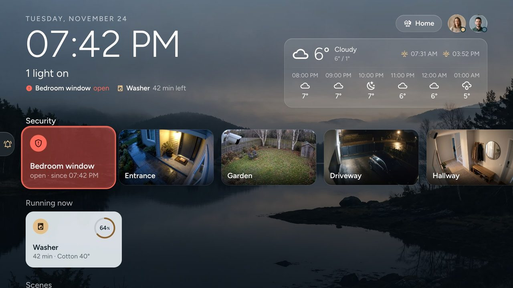
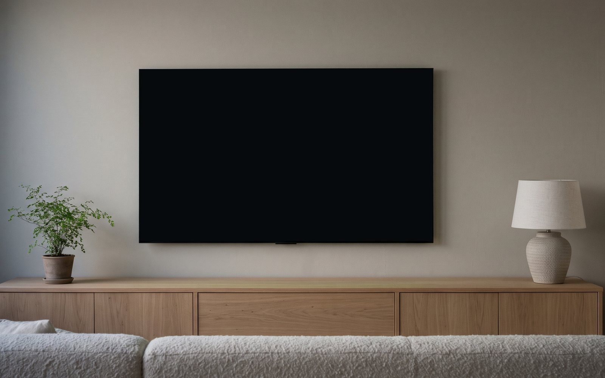
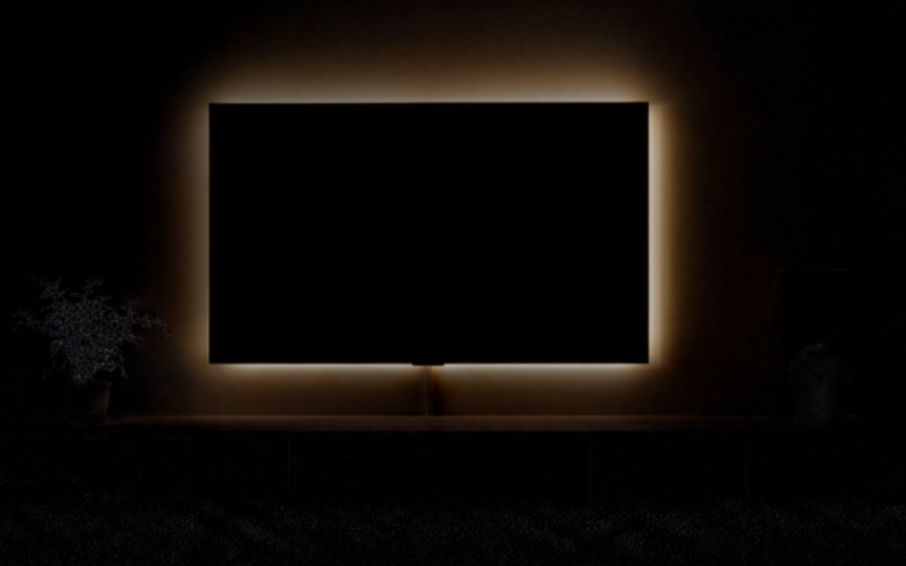
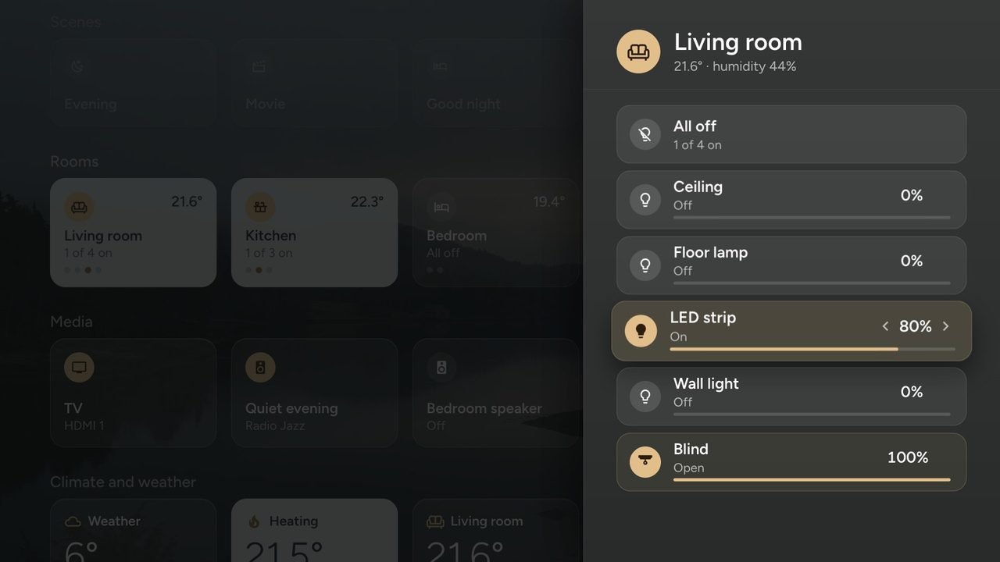
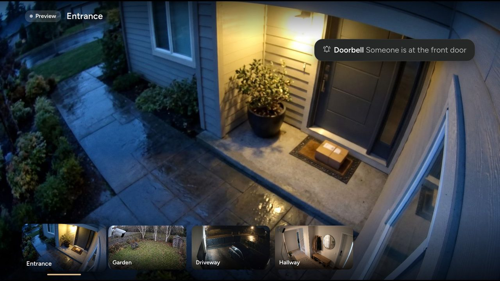
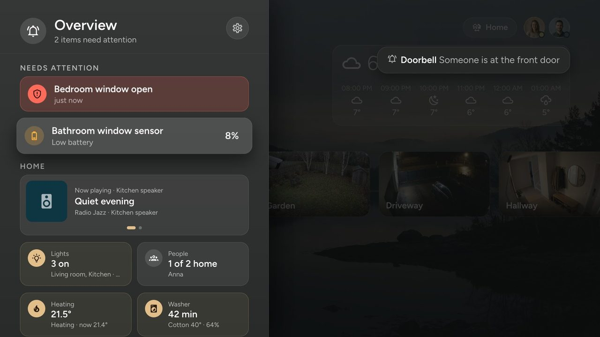
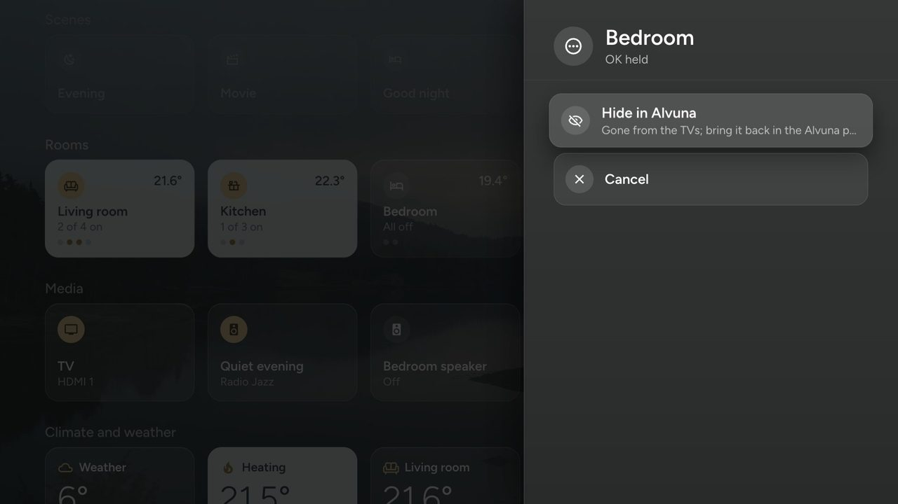
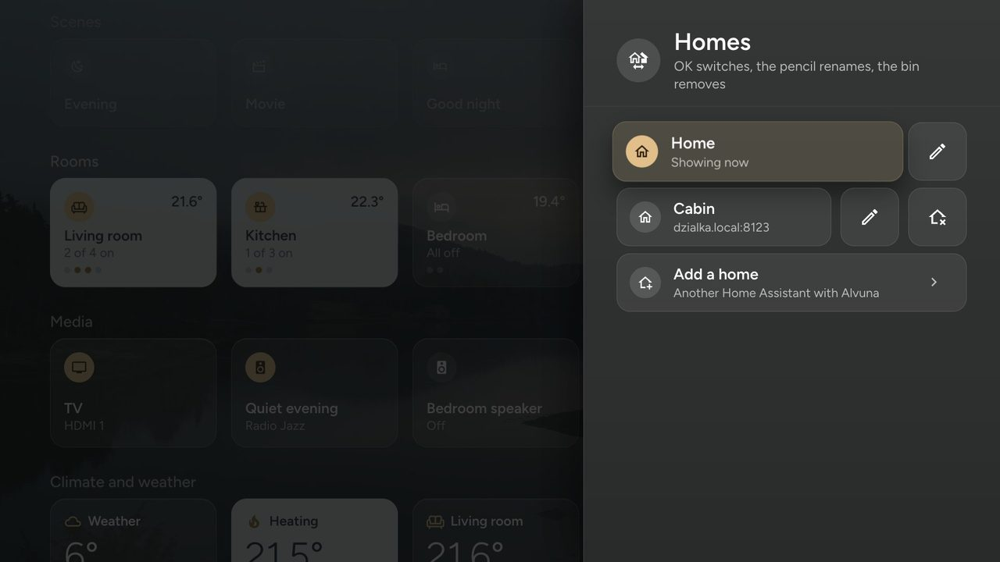
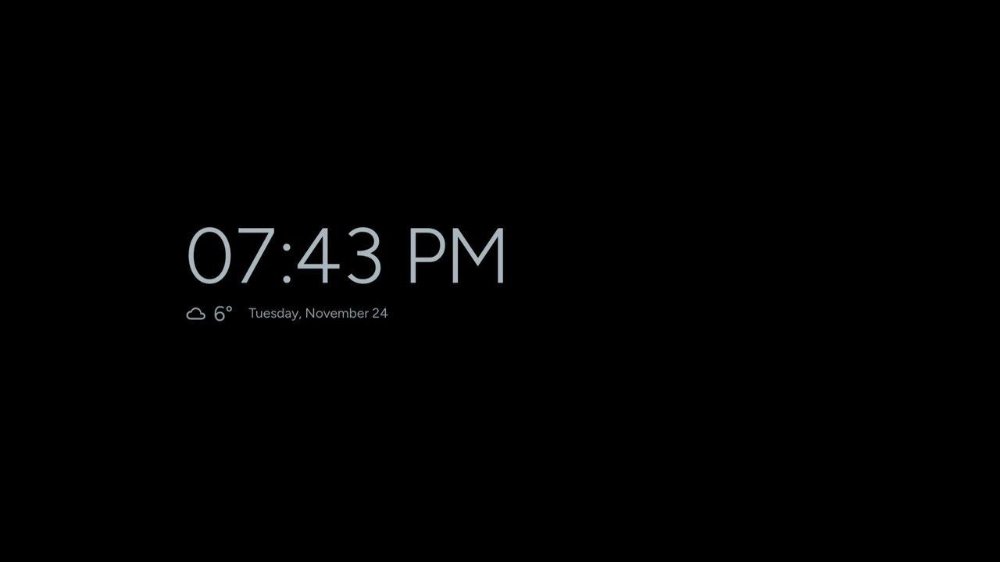
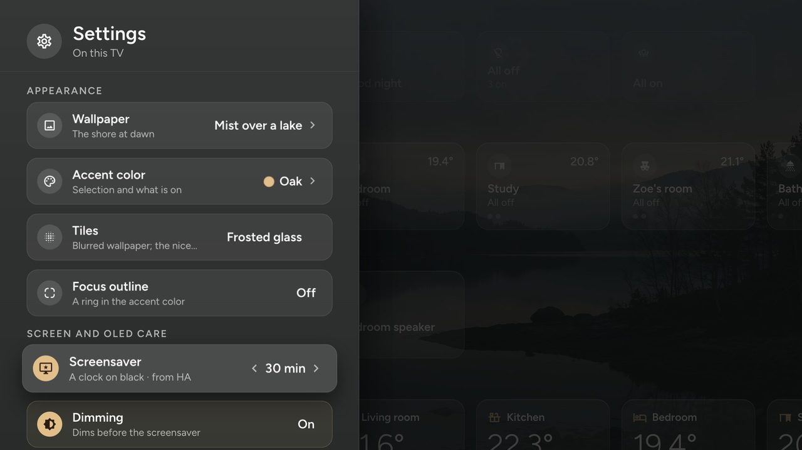

Lays itself out
Rooms from Home Assistant's areas and floors, each with its lights, blinds and thermometer. Cameras, people, weather and whatever is running fall into place. Add a device and the TV shows it right away.
Alvuna brings Home Assistant to the big screen: rooms, lights, scenes, cameras and weather, laid out for the remote. No dashboard to build, nothing to type on the TV.
LG webOS · Google TV soon · also runs in the TV's browser



This is the real app with a sample home. Move the mouse onto the screen to drive it yourself.
The TV never gets your password. It shows a code, and you confirm it in Home Assistant, where you are already signed in.
In Home Assistant: Settings → Marketplace. No restart needed to install.
Alvuna finds Home Assistant on your network and shows a code.
Settings → Devices & services → Discovered → Alvuna TV. A moment later the TV shows your home.

Rooms from Home Assistant's areas and floors, each with its lights, blinds and thermometer. Cameras, people, weather and whatever is running fall into place. Add a device and the TV shows it right away.

Lights with brightness, blinds, temperature and humidity. All with the remote, no menus to dig through.

Every camera full screen. When someone rings, an automation puts the front door on every TV.

An open window, a leak, a low battery, finished laundry, tomorrow's bin collection. All in one panel on the left.

Hold OK on a tile, or use the Alvuna panel in Home Assistant: hide, rename and reorder. No YAML.

Your flat, your parents' house, the summer cabin. Each paired on its own, one press to switch.

Dimming, a screensaver with a wandering clock and an invisible pixel shift. Smooth animation even on an ordinary TV.
Alvuna is not a Home Assistant page blown up for the TV. Every screen was designed from scratch for the remote and for a few metres away.
Every screen works with the arrows alone. Back always closes what opened, and from the first row returns to the TV.
The focused tile grows and lights up. Settings add an outline in the accent colour.
Drawn for 1920 × 1080 seen from a few metres: no text smaller than 24 pixels, large tiles.
Details slide in from the side while the home stays behind. You never get lost and always know the way back.
A tile's menu without going into settings: hide what you don't need.
The pointer focuses a tile, a click is OK and the wheel scrolls the rows.

Only movement and opacity animate, and the graphics chip does that work. The screen redraws only what changed, and the frosted glass is painted once instead of blurred live every frame. The app's files are compressed, and its icons come from your own Home Assistant.
In Settings on the TV, with the remote:
Alvuna has no cloud of its own. The TV talks only to your Home Assistant, and we receive no data at all.
Privacy policyHome Assistant 2025.1 or newer and an LG TV with webOS. The Google TV app is in the works; until then Alvuna runs in the TV's browser at your Home Assistant's address followed by /alvuna/tv/.
No. The layout comes from the areas, floors and devices you already have in Home Assistant. Anything you don't need you hide in the Alvuna panel, or by holding OK on its tile.
The TV gets a user of its own without admin rights. By default it connects only on your local network; access from outside the home is something you allow yourself when pairing.
Delete the Alvuna TV device under Settings → Devices & services; its access ends immediately. On the TV itself you can also sign out under Settings → Connection.
The Home Assistant integration is free and open source under the MIT licence.